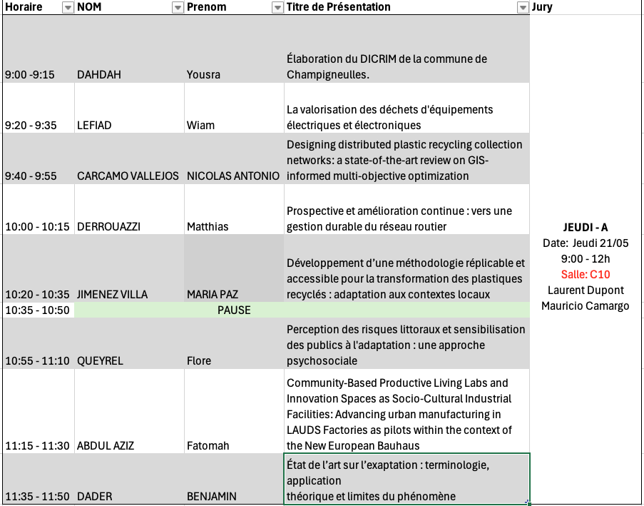
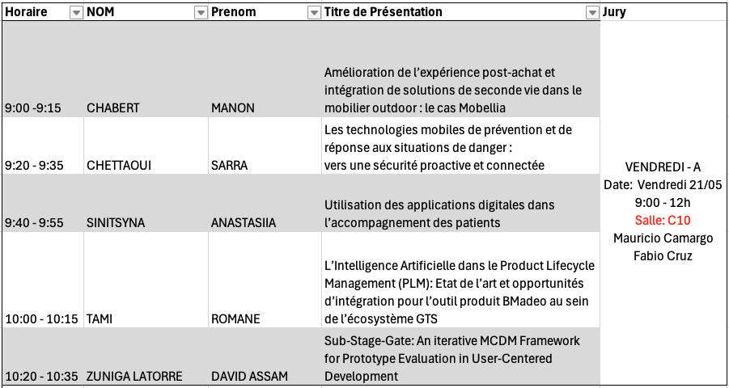
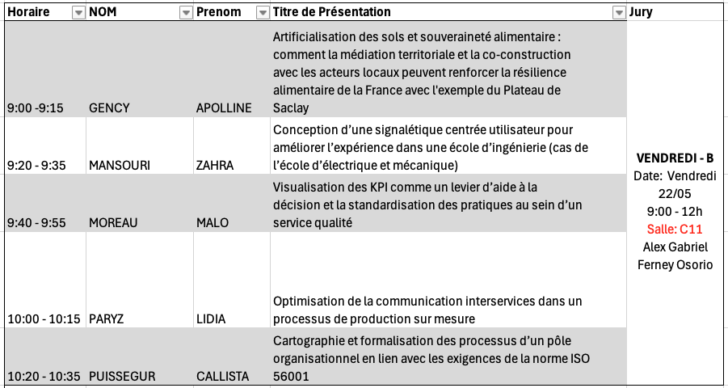

Consignes aux Reviewers
Module CI12: Recherche Developpement et Innovation UE 1053: Paradigme et Méthodologie de Recherche en Innovation
Ce document a pour objectif de vous donner un cadre de référence pour réaliser la révision des articles dans le cadre du module CI12 – Recherche, Développement et Innovation.
Merci de lire attentivement les éléments. Si vous avez des questions, n’hésitez pas à nous écrire à l’équipe enseignante du module CI12.
Contexte
Tout d’abord, je vous remercie pour les documents fournis dans le cadre de ce module. Comme nous l’avons souligné, l’objectif pédagogique du module est de vous donner des outils de recherche et de veille stratégique dans les travaux scientifiques qui puissent être pertinents pour votre avenir professionnel, aussi bien pendant votre stage qu’au-delà.
Comme discuté lors des séances de cours, la recherche scientifique constitue une démarche supplémentaire pour renforcer votre légitimité et votre expertise sur un sujet donné. L’une des caractéristiques de la formation à l’ENSGSI est de vous préparer à intervenir dans différents domaines : conception de produit/service, gestion de projet en milieu complexe, innovation territoriale, entre autres.
Objectif.
Les jeudi 21/05 et vendredi 22/05, de 9h00 à 12h00 (mode hybride pour IDEAS, présence obligatoire au GSI pour les IUVTT), se tiendra le séminaire de recherche avec les étudiant.es des masters IDEAS, IUVTT et 3AI (ayant choisi l’option recherche).
Lecture critique:
Chaque étudiant.e devra avoir lu les deux articles et répondu aux différentes questions du formulaire.
Pour rappel, les rapporteur.es doivent préparer trois questions sur chaque document. Lors du séminaire, il sera demandé de poser une seule question, celle qui vous semble la plus pertinente ou intrigante, afin d’animer le débat et la réflexion collective. En fonction du temps disponible, d’autres questions pourront également être abordées.Présentation individuelle:
Chaque étudiant.e devra préparer une présentation :- Durée: Durée : 15 minutes maximum (8 minutes de présentation + 7 minutes de questions)
- 8 diapositives maximum recommandées
- Il est possible de profiter de l’intelligence collective des participant.es afin de demander des suggestions, commentaires ou pistes de réflexion utiles pour la suite de votre stage.
Formulaire:
- Vous trouverez ci-dessous le lien vers le questionnaire à compléter : https://forms.gle/kpFPZJxHPC5AvvR1A
Horaire et ordre de passage Voir figures ci-dessous. En cas changement, le document sera mise à jour.



Liens de Connexion:
Participation au séminaire:
Situation idéale: Les étudiant.es participent à l’ensemble des séances du séminaire (matinées 1 et 2), aussi bien lorsqu’ils.elles présentent leur travail que lorsqu’ils.elles assistent aux présentations de leurs camarades en tant qu’évaluateur.trices et participant.es aux échanges..
Participation attendue : Il est fortement recommandé que chaque étudiant.e participe à l’intégralité de la session durant laquelle il/elle intervient en tant que présentateur.trice et évaluateur.trice.
Participation minimale obligatoire: Chaque étudiant.e devra impérativement être présent.e pendant les 15 minutes de sa propre présentation ET participer aux 30 minutes consacrées à son rôle d’évaluateur. trice des travaux de ses camarades.
Déroulé du séminaire:
- Présentation du travail: Le.la présentateur.trice réalise sa présentation dans le temps imparti.
- Intervention des évaluateur.trices: Chaque évaluateur.trice formule :
- Une appréciation générale de la présentation et du document lu ;
- La question ou remarque qu’il.elle considère la plus pertinente pour enrichir la discussion.
- Retour du jury: Un/les membre(s) du jury partage ensuite son retour global, ses observations et ses pistes de réflexion sur l’ensemble des échanges.
Support PPT/PDF: Vous pouvez déposer votre support de présentation sur ARCHE gagner du temps lors de la présentation.
Le but de ce séminaire n’est pas d’évaluer votre travail en tant que chercheur·ses.
L’objectif est avant tout de vous offrir un moment de réflexivité sur la manière dont les compétences de recherche bibliographique et de lecture critique de documents scientifiques peuvent vous fournir des repères utiles pour le développement de votre mission industrielle et, plus largement, de votre pratique professionnelle.
Cadre déontologique
Je me permets d’expliciter certains principes qui ont pour objectif de poser un cadre de confiance et de respect mutuel dans cette activité. Vous allez lire attentivement des documents réalisés par vos collègues. Je vous prie donc de considérer les principes suivants:
- Soyez bienveillant.e.s les un.e.s envers les autres..
Tout travail ou document mérite d’être regardé avec respect et bienveillance. Nous partons du principe que chaque document a été réalisé dans les meilleures conditions possibles, avec les ressources de temps et d’énergie disponibles. Cela ne constitue en aucun cas une évaluation de la valeur ou des capacités professionnelles de son auteur.trice.
- Que votre parole soit constructive.
Le séminaire a pour objectif de construire un débat fondé sur des arguments. Vous avez le droit d’être en accord — ou non — avec le document qui vous est attribué. Et eventuellment avec les rémarques/commentaires que vous seront donnés lors de votre présentation. Veillez donc à formuler des critiques constructives afin que le séminaire soit un espace d’échanges intellectuels enrichissants pour chacun.e.
- Personne n’est un.e expert.e.
Votre rôle d’évaluateur est d’apporter un regard neuf et complémentaire. Personne n’est expert en tout. Le but est de pouvoir proposer des pistes d’amélioration à vos collègues. Si le document traite d’un domaine éloigné de votre expertise, tant mieux : votre regard extérieur est précieux. À l’inverse, si vous êtes en désaccord avec certains arguments de l’auteur.trice, cela représente une excellente opportunité pour exprimer vos idées de manière constructive et faire avancer collectivement le travail.
- IA-t-il quelqu’un ?
Comme discuté lors des séances de cours, l’introduction de l’intelligence artificielle bouleverse profondément et de manière systémique notre rapport à l’esprit critique. Nous ne sommes pas ici pour faire l’apologie ou l’accusation de l’utilisation des outils de type LLM (Large Language Models). Le principal repère que nous pouvons vous donner est le suivant : vous devez rester les pilotes de ces outils. C’est à vous de développer un regard critique sur les sujets abordés. Vous devez contrôler l’outil — et non l’inverse.Dans le sens proposé par Ivan Illich 1:
« J’appelle société conviviale une société où l’outil moderne est au service de la personne intégrée à la collectivité, et non au service d’un corps de spécialistes. Conviviale est la société où l’homme contrôle l’outil »
- Il n’y a pas de question bête.
Pendant le séminaire — et plus largement dans le cadre académique — l’objectif est de vous offrir un espace de questionnement où la contribution principale réside souvent davantage dans les questions que dans les réponses ou les vérités absolues.N’hésitez pas à partager vos interrogations avec vos camarades et avec l’équipe enseignante.Il est probable que nous n’ayons pas toujours de réponse immédiate à vous apporter.En revanche, nous pouvons vous accompagner dans votre réflexion afin que vous puissiez construire, par vous-mêmes, une réponse pertinente à votre problématique professionnelle.
- Au-delà d’une note : construisez votre réseau dès maintenant.
Vous vous situez à la frontière entre le monde académique et le monde professionnel. Cet exercice pédagogique, au-delà de l’évaluation du module, représente aussi une opportunité de découvrir le projet professionnel en cours de vos camarades. C’est une première étape dans la construction de votre réseau professionnel pour la suite de votre carrière. Soyez curieux.ses, échangez, créez des liens.
Contrôle des modifications du document
- V1 — 17/05/2026 : Première version des consignes générales.
- V2 — 20/05/2026 : Ajout des sections relatives à la participation et au déroulé du séminaire.
Notes de bas de page
Illich, Ivan., 1973. La Convivialité. Éditions du Seuil pour la version française. Page 13↩︎